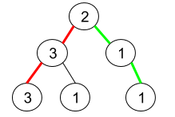
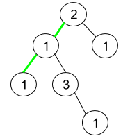

| Category | Difficulty | Likes | Dislikes |
|---|---|---|---|
| Algorithms | Medium | 3328 | 131 |
amazon | bloomberg
Given a binary tree where node values are digits from 1 to 9. A path in the binary tree is said to be pseudo-palindromic if at least one permutation of the node values in the path is a palindrome.
Return the number of pseudo-palindromic paths going from the root node to leaf nodes.
Example 1:

Input: root = [2,3,1,3,1,null,1]
Output: 2
Explanation: The figure above represents the given binary tree. There are three paths going from the root node to leaf nodes: the red path [2,3,3], the green path [2,1,1], and the path [2,3,1]. Among these paths only red path and green path are pseudo-palindromic paths since the red path [2,3,3] can be rearranged in [3,2,3] (palindrome) and the green path [2,1,1] can be rearranged in [1,2,1] (palindrome).Example 2:

Input: root = [2,1,1,1,3,null,null,null,null,null,1]
Output: 1
Explanation: The figure above represents the given binary tree. There are three paths going from the root node to leaf nodes: the green path [2,1,1], the path [2,1,3,1], and the path [2,1]. Among these paths only the green path is pseudo-palindromic since [2,1,1] can be rearranged in [1,2,1] (palindrome).Example 3:
Input: root = [9]
Output: 1
Constraints:
[1, 105].1 <= Node.val <= 9